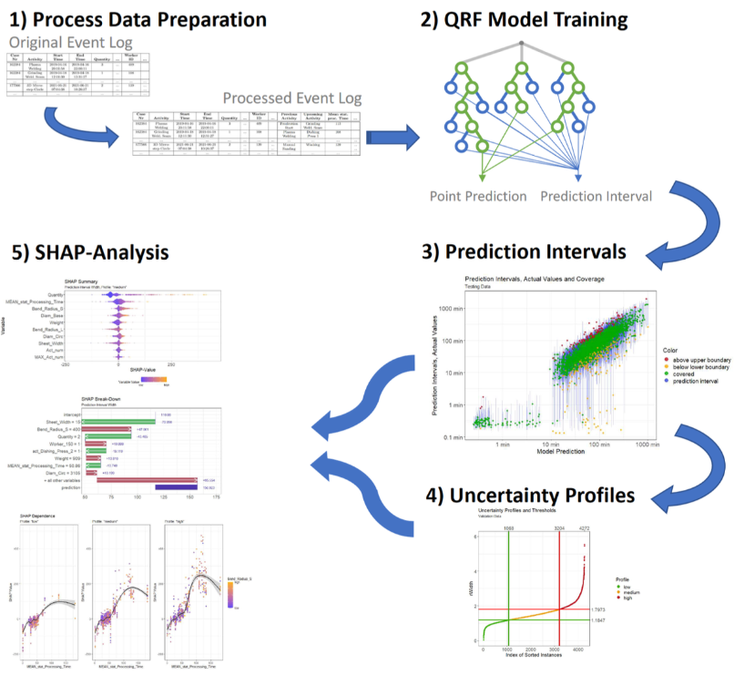
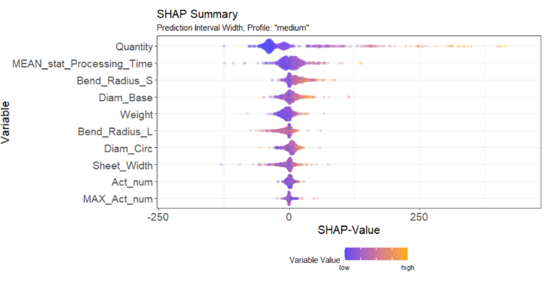
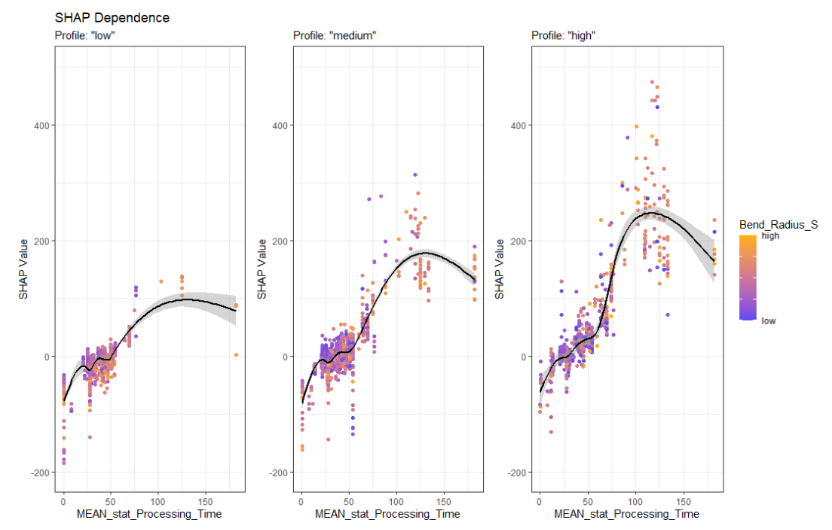

LITERATURE REVIEW
Quantifying and Explaining Machine Learning Uncertainty in Predictive Process Monitoring
BACKGROUND / MOTIVATION :
CONTEXT
The entire framework of speculative process monitoring lies at the juncture between artificial intelligence (AI) and operations research (OR) under complicated industrial environments. Businesses are heavily reliant on their decision-making processes driven by data, so they want to compete well. Since predictive models typically overlook the various uncertainties that characterize real-world processes, their relevance in circumstances that might rapidly evolve appears to be limited. This research aims to tackle critical issues in predictive analytics, particularly in production planning, by fusing explainability and uncertainty quantification (UQ) into machine learning (ML) workflows.
PROBLEM OR GAP IN THE EXISTING LITERATURE
The neglect of data-driven estimation of technical production parameters, with many studies relying on assumptions or intuition.
The dominance of deterministic predictive models that do not consider uncertainty, limiting their reliability in real-world scenarios.
The lack of methods to explain sources of uncertainty in predictions, which hinders their practical application and acceptance by stakeholders.
SIGNIFICANCE OF RESEARCH QUESTION
The research aims to integrate uncertainty quantification and explainability into predictive analytics for production planning, addressing the limitations of traditional models. This enhances the reliability, transparency, and utility of predictive analytics, enabling more informed and effective decision-making in dynamic manufacturing environments.
METHODS USED
METHODS AND USES
The overview of the whole process used in the analytics is summarized as a picture below;

1 Quantile regression forests (QRF) is a more general method of random forests that gives prediction intervals. QRF provides prediction intervals for uncertainty quantification.
\[ \[ w_i(x, \theta) = \frac{1\{X_i \in R_\ell(x, \theta)\}} {\sum_{j : X_j \in R_\ell(x, \theta)} 1} \] \]
\[ \[ w_i(x) = k_1 \sum w_i(x, \theta_t) \] \]
2 SHAP provides explanations of the contribution of individual input features to predictively uncertain clearness. It also enhances explainability by identifying key predictor features.
\[ g(z_0) = 0 + \sum_{i} \alpha_i z_0^i \]
EXACT SHAP VALUES :
\[ \[ x_0 (z_0) = \frac{M - 1}{\binom{M}{|z_0|}\cdot |z_0| \cdot (M - |z_0|)} \]
3 Process-aware information systems (PAIS) leverage manufacturing execution systems data to build comprehensive event logs for predictive modeling in general. PAIS grounding the model in real-world data captures production process complexity and variability.
TECHNIQUES AND APPROACHES
Using SHAP to explain prediction intervals instead of point predictions lends greater insight into the sources of uncertainty. Your response will normally go into further detail about the fact that the uncertainty may be profiled as low, medium, and high, though this will enable targeted interventions and make better decisions on managing risk. The implementation of probabilistic estimations and explainability techniques on real-world production planning scenarios tightens the relationship between theory and practice.
SIGNIFICANCE OF THE WORK
KEY FINDINGS AND CONTRIBUTIONS
- In QRF predictive intervals, higher reliability has been obtained, attaining 90 Percent PuC for test datasets.
- SHAP analysis indicates that production quantity, material properties, and historical processing times had a direct impact on prediction intervals.
- Uncertainty quantification gives added benefits for decision-making in areas with very high uncertainty.
- The confluence of uncertainty quantification and explainable artificial intelligence brings about models that profile accuracy and interpretability.
IMPLICATIONS AND BROADER CONTEXT
The approach can be integrated with optimization approaches to improve decision-making in the face of uncertainty, making it extremely useful for prescriptive analytics. To ensure that decisions are resilient to variability, the QRF model’s outputs, for example, can be immediately integrated into optimization frameworks for scheduling, resource allocation, or inventory management. The significance of explainability in fostering confidence in machine learning systems is further highlighted by this study. It enables users to verify model predictions and pinpoint possible areas for development by offering insights into the factors that contribute to uncertainty. This is especially crucial in high-stakes industries like manufacturing, where choices made using inaccurate or ambiguous models may have serious operational or financial repercussions. extending the paradigm to further fields where uncertainty is crucial, like healthcare or supply chain logistics.
SHAP summary plots for “low,” “medium,” and “high” uncertainty profiles, showcasing differences in feature impacts under varying levels of uncertainty


This gives representation of the other usage of the given method in new fields, for instance health care and supply chain logistics.
WORK CONNECTIONS
PAPAER RELEVANCE
Predict-then-optimize and Explainable AI are two approaches adopted in Operations Research (OR) to amplify decision-making. Predict-then-optimize uses predictive analytics to forecast an event and/or behavior of a system to determine the most viable course of action with the use of optimization models. Explainable AI aims to transform complex OR models into more clear and comprehensible formulations that build trust and identify biases. Research in these areas utilizes such techniques as sensitivity analysis, local explanations, and counterfactual reasoning. Fundamental research on Random forests and SHAP aims to understand their strengths and limitations, properly identify potential biases, and work toward increased interpretability and explainability.
DIFFER FROM PREVIOUS WORKS
Predictive analytics has demonstrated its utility in estimating parameters within optimization models. However, the studies mainly presume an expected outcome and are thus less useful in the highly unpredictable context. To allow for the quantification of variability during the consequent optimization phase, uncertainty quantification is included into the prediction stage in this study.
HOW IT IS DIFFERENT FROM PREVIOUS WORKS : The study offers a fresh glimmer that has been spun around raw footages through publication after publication with a grain of prediction taken up on the foundation of deterministic outcomes.The development work, very clearly, offers a complete framework which raises the level of prescriptive analytics just to add predictive process monitoring into it, and integrates findings from several perspectives.
MY PROJECT RELEVANCE
This capstone project on Machine Learning and Predictive Analytics for outcome prediction via historical data should be considered a very promising way of quantifying and explaining uncertainty in predictions using Quantile Regression Forests (QRF) and the SHapley Additive exPlanations (SHAP) method. Whenever and wherever predictions based on event-based data are carried out, improved predictive accuracy functions to employ advanced preprocessing and feature engineering techniques. The methods themselves can feature multiple applications, particularly in health, retail, and financial forecasting. Continuous model updates help improve predictive accuracy and adaptability. The paper emphasizes the importance of combining predictive with prescriptive analytics in the decision-making process, which in turn gives practical recommendations to stakeholders.
REFERENCES
[1] Simon, H.A.: The future of information systems. Annals of Operations Research 71(0), 3–14 (1997)
[2] Frazzetto, D., Nielsen, T.D., Pedersen, T.B., Sikˇsnys, L.: Prescriptive ana- lytics: a survey of emerging trends and technologies. The VLDB Journal 28, 575–595 (2019)